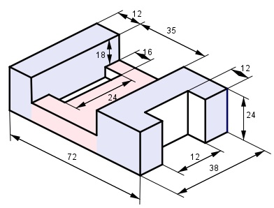
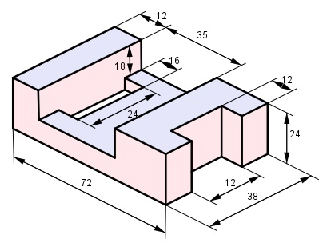

Aufgabe 62 Berechnen Sie das Volumen V und die Oberfläche O des dargestellten symmetrischen Körpers. Alle Maße in mm.  Das Volumen besteht aus dem linken blauen Rechteckprisma, dem roten Rechteckprisma minus weißem Rechteckprisma und dem rechten blauen Rechteckprisma minus weißem Rechteckprisma. V linkes Rechteckprisma: 12 mm * 24 mm * 38 mm = 10 944 mm³ V rotes Rechteckprisma – Ausschnitt: 35 * (24 – 18) * 38 mm³ – 24 * (24 – 18) * 16 mm³ = = 7 980 mm³ – 2 304 mm³ = 5 676 mm³ V blaues Rechteckprisma – Ausschnitt: 38 * 24 * (72 – 12 – 35) mm³ – 12 * 12 * 24 mm³ = = 22 800 mm³ - 3 456 mm³ = 19 344 mm³ V = 10 944 mm³ + 5 676 mm³ + 19 344 mm³ = 35 964 mm³  O = 2 * blaue Flächen + rote Flächen mit der Höhe 24 mm + rote Flächen mit der Höhe (24 mm – 18 mm) = 6 mm + rote Flächen mit der Höhe 18 mm 2 * blaue Flächen: 2 * [12 * 38 + (35 * 38 – 16 * 24) mm² + 38 * (72 – 12 – 35 ) mm² – - 12 * 12 mm²] = = 2 * [456 mm² + 1 330 mm² - 384 mm² + 950 mm² - 144 mm²] = = 2 * 2 208 mm² = 4 416 mm² Rote Flächen mit der Höhe 24 mm: 24 * [2 * 12 + 2 * (72 – 12 – 35) + 2 * 38 + 2 * 12 + 24 ] mm² = = 24 * (24 + 50 + 76 + 24 + 24) mm² = 24 * 198 mm² = 4 752 mm² Rote Flächen mit der Höhe 6 mm: 6 * [2 * 35 + (24 + 2 * 16 )] mm² = 6 * (70 + 56) mm² = 6 * 126 mm² = 756 mm² Rote Flächen mit der Höhe 18 mm: 18 * [(38 – 24) + 38] mm² = 18 * (14 + 38) mm² = 18 * 52 mm² = = 936 mm² O = 4 416 mm² + 4 752 mm² + 756 mm² + 936 mm² = 10 860 mm² O = 108,6 cm²